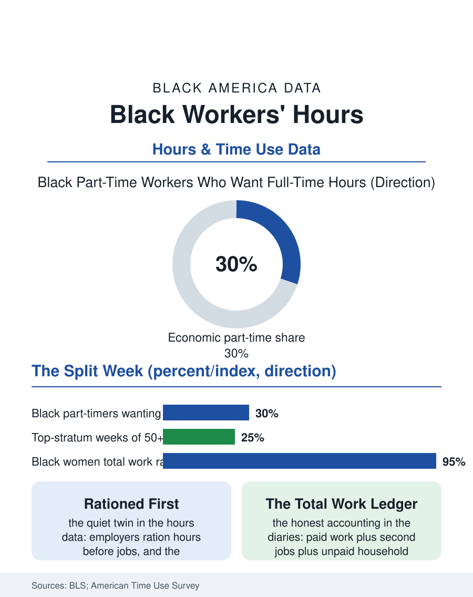

Black Employment
Too Much or Not Enough: Black Workers' Hours
The average week conceals a split: hours rationed at the bottom, tournament hours at the top, and the standard forty thinning between. The hours file.

The average Black full-time worker's week runs about thirty-nine to forty hours of actual work, but the average conceals the distribution this article reads: a workforce split among the underemployed seeking more hours, the standard forty, and a long-hours stratum of salaried and driven workers whose weeks run fifty and beyond. The hours data, the Bureau of Labor Statistics' and the time use survey's, draw the split with racial contours. This article reads the hours file.
The Distribution, Not the Average
Hours wanted and hours worked are different variables, and the gap between them is the file's first subject. The underemployment measures, workers part-time for economic reasons who want full-time schedules, run higher for Black workers across the cycle, the hours deficit being the quiet twin of the unemployment gap, since employers ration hours before they ration jobs in the downturns and restore them last in the recoveries for the last-hired workforce. At the distribution's other end, the long-hours stratum, managers, professionals, the self-employed of the hustle files, and the multiple jobholders whose combined schedules exceed any single job's, composes a population whose weekly totals the time diaries record at fifty-five to seventy hours, invisible in the establishment data that count jobs rather than people. The salaried exemption draws the legal line through the distribution: the overtime threshold's coverage decides which long hours are paid at the premium and which are donated, and the Black salaried workforce's position, concentrated in the public and nonprofit sectors where the comp-time and the mission absorb the extra hours, prices the donation in the public sector's currency of security and pension rather than the private sector's bonus pool.
Second Jobs, Side Work, and the Total
The total-work accounting requires the diaries. The American Time Use Survey's person-level record, summing all jobs, the commute, and the unpaid household production the economic files exclude, produces the honest comparison: total work burdens by race and gender in which Black women's combined paid and unpaid hours rank at the top of the national table, the second shift of the household literature measured in the same units as the first. The multiple jobholding rate, covered in its own file, stacks the formal second job on top; the informal economy's hours, the hair, the plates, the repairs, the child care of the unlicensed economy, escape both instruments almost entirely, so that the hours of the population working hardest in the cash economy's shadows are precisely those the official distribution understates most. The trend line in the file is the polarization the labor economists document across the whole workforce and with the Black distribution's characteristic exaggeration: hours growing at the top, rationed at the bottom, the standard forty shrinking as a share of the whole, a hollowing the schedule and gig files record from their own angles, the workforce's week becoming either too much or not enough with the middle thinning between.
What the Hours Buy
The file closes on the exchange the hours represent. At the distribution's bottom, hours are the wage: the hourly workforce's income is its schedule multiplied, which is why the hours rationing of the underemployed is an income policy administered by scheduling software, and why the fair workweek laws' guaranteed-hours provisions matter to the Black retail and food workforce as directly as any wage floor. At the top, hours are the tournament's entry fee, the partnership, the tenure file, the promotion ladder all priced in the long week, and the Black professionals' hours carry the additional documented tax of the representation burden, the mentoring and committee loads the workplace literature records. Between the two stands the file's normative datum, the forty-hour standard itself, a labor movement artifact whose erosion the distribution measures: the standard week survives as the median experience of the plurality, no longer the near-universal condition of the postwar decades. The bureau counts the average week at forty and the file has spent its length refusing the average. The distribution is the story, split and polarizing, and the Black workforce, overrepresented at both tails and underrepresented in the secure middle, is the distribution's clearest portrait, which is to say its most honest mirror of where the American week itself is going.
More in Black Employment
The Black Unemployment Rate: The Two-to-One Pattern
Black unemployment runs at roughly twice the White rate — 5.5 percent against 3.3 percent in annual averages — a ratio stable across five decades of federal data. How it is measured and why it persists.
Black Median Weekly Earnings: The 80-Cent Ratio
Black full-time workers earn a median of about $900 a week — roughly 80 cents for every dollar White workers earn. The BLS earnings data by group, gender, and occupation.
Black Labor Force Participation: Working at National Rates
Black labor force participation runs at roughly the national rate — and Black women participate at higher rates than White women. The BLS participation data.
Source: Bureau of Labor Statistics hours and underemployment data; American Time Use Survey total work analyses.